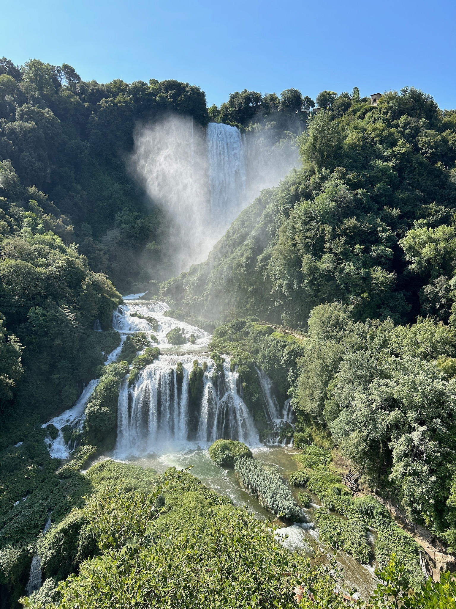
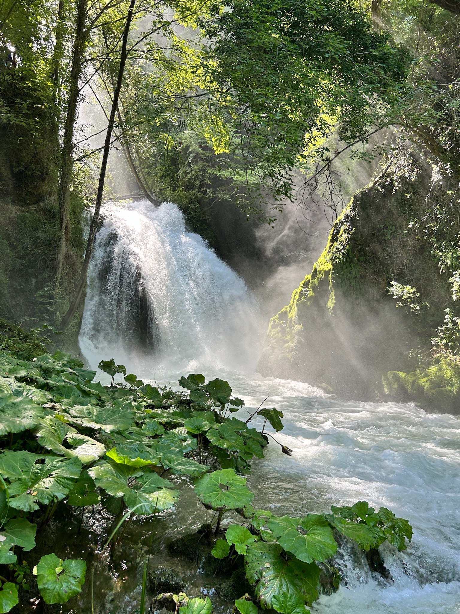

Le Cascate delle Marmore si trovano in Umbria, nei pressi di Terni, e sono considerate tra le più alte d’Europa con un dislivello complessivo di 165 metri.
Il loro spettacolo affascina ogni anno migliaia di visitatori: l’acqua si getta in tre salti scenografici, incorniciati da una lussureggiante vegetazione.
A renderle uniche, però, è anche il fatto che siano in parte artificiali: la mano dell’uomo ha infatti contribuito a dare loro l’aspetto attuale.
Sommario
La storia delle cascate
Le origini delle Cascate delle Marmore risalgono all’epoca romana. Nel 271 a.C., il console Manio Curio Dentato ordinò la costruzione di un canale, il Cavo Curiano, per deviare le acque stagnanti del fiume Velino, che creavano problemi di salute nella zona di Rieti.
Le acque vennero così fatte precipitare nella gola del fiume Nera, dando origine alla cascata.
Nel corso dei secoli, però, la gestione delle acque causò numerosi problemi a valle, soprattutto a Terni.
Fu solo nel XVIII secolo, grazie a interventi dell'ingegnere Andrea Vici su incarico dello Stato Pontificio, che le cascate assunsero l’aspetto attuale, con un flusso regolabile tramite un sistema di canali e dighe.

Uno spettacolo regolato dall’uomo
Oggi le cascate sono regolate da un sistema idroelettrico: l’acqua viene rilasciata in orari prestabiliti per creare l’effetto spettacolare del getto.
Questo permette ai visitatori di ammirare la potenza della cascata in determinati momenti della giornata, segnalati da un suono di sirena.
Quando non c’è rilascio, il flusso è ridotto, ma il paesaggio resta suggestivo grazie ai numerosi sentieri e belvedere che permettono di esplorarla da diverse angolazioni.
Natura, escursioni e sport
L’area circostante è un paradiso per gli amanti della natura e delle escursioni.
Sentieri immersi nel verde, grotte e piccoli ruscelli accompagnano i visitatori in un percorso tra boschi, ponti e scorci mozzafiato.

La zona è anche frequentata dagli appassionati di sport all’aria aperta, come il rafting, il canyoning e l’arrampicata.
Inoltre, il Parco della Cascata offre aree attrezzate per famiglie, visite guidate e attività didattiche.